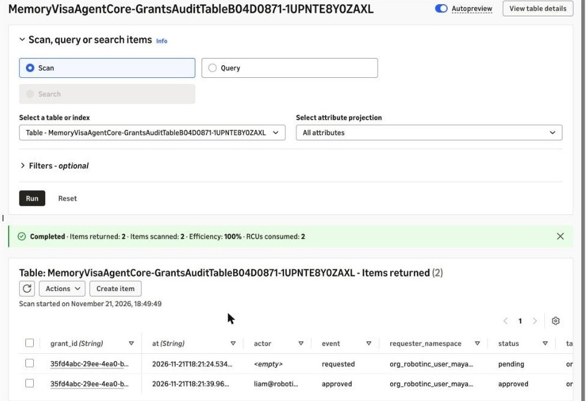

Cross-Domain Access Grants on Bedrock AgentCore
memory-visa
Deliberate, temporary, human-approved access across internal AI agent boundaries.
Anyone can lock a door. The hard version is: can I let the right person in, on purpose, for a stated reason, for exactly as long as it takes, without leaving the door open behind them?
Three days before the Atlas-v2 ships, Maya hits a wall.
She's in Engineering at Robotinc. Her packaging manifest needs one specific fact from Legal's files: an export-control classification. She doesn't have access to it - it's Legal's domain, and for good reason most days of the year.
This is the actual test of any access-control system, and it's a more interesting one than "can I keep people out." Anyone can lock a door. The hard version is: can I let the right person in, on purpose, for a stated reason, for exactly as long as it takes, without leaving the door open behind them? Can I prove, afterward, exactly who let them in and why?
AWS Bedrock AgentCore already ships the "keep people out" half: Cedar policies, Cognito JWT claims, and per-tenant namespace isolation in Memory. It's solid and already shipped, so none of that gets reinvented here. What it doesn't ship is Maya's situation: a deliberate, temporary, audited crossing of a boundary that's supposed to hold every other day of the year.
That's the part memory-visa builds. Here we're exploring how this could look in practice, using some of AWS's own native tools rather than bolting on new infrastructure.
Why Share Memory At All
If you're running more than one AI agent across your org, which most teams past a certain size already are, each agent's memory is usually its own island. Engineering's agent learns things Legal's agent will never see. Finance's agent starts from zero on a question Engineering already answered last quarter. Centralise that memory - one shared, namespaced store instead of five disconnected ones - and the payoff compounds: any agent can draw on what any other agent in the org already knows, not just its own slice.
The catch shows up the moment you actually try it. Centralised means every agent can now see everything, which is worse than the islands you started with - that's not a hypothetical, it's the first thing that breaks. memory-visa is the piece in between: shared by default stays isolated by default, and crossing that boundary is a deliberate, audited, time-boxed act, not a permanent hole knocked in the wall.
None of this requires standardising on one AI client, either. MCP means Maya keeps using Claude, Liam can be on Cursor, Priya on whatever ships next year - they're all calling the same tools behind the same Gateway, into the same memory. Bring your own agent; the memory and the access control are centralised, not the tool everyone's forced to open.
The Problem, Inside One Company
Robotinc ships the Atlas-v2, their new warehouse robot. Four people, four defaults:
Engineering
Legal
Finance
contractor - external, one project, no department
The first three each see only their own department's memory and tools, nobody else's - correctly, on an ordinary day. Jordan starts narrower still, the way a contractor's access should look from day one rather than something retrofitted after the fact.
Today isn't an ordinary day for Maya - and "ask Liam to paste it into Slack" isn't an audit trail.
| Requirement | Failure mode if unmet |
|---|---|
| Department isolation | Maya reads Priya's confidential Q4 budget notes by accident, because nothing actually stops Engineering from reading Finance's notes. |
| Controlled cross-domain access | Maya needs Liam's classification before the shipment goes out. Permanent isolation makes that impossible; no isolation makes row one pointless. |
The same mechanism covers Jordan's trickier case too: when he needs an exception, he goes through the exact same grant workflow Maya does. Contractors should get the tightest defaults and the most audited exceptions - full-time status shouldn't be the baseline everyone starts from.
Getting on the Same Page
If you're opening the repo for the first time, here is how the pieces fit together:
| Term | What it is |
|---|---|
| Bedrock AgentCore | AWS's managed runtime for AI agents. A Gateway fronts your tools behind one authenticated endpoint; Memory holds agent memory, namespaced per tenant, in two tiers - short-term (the raw event, written and readable immediately) and long-term (facts automatically extracted from short-term memory by a background process, searchable only once that extraction finishes); a Policy Engine evaluates access rules before a request reaches your code at all. |
| Cedar | The policy language AWS open-sourced for exactly this - permit/forbid statements over principal, action, and resource, default-deny, evaluated by the Policy Engine. |
| Cognito | The identity provider. Every caller authenticates here first; org and department claims can ride along as JWT claims for Cedar to read as tags on the principal - though as the EngineeringTools gate below shows, the access tokens this project's Gateway actually validates don't carry them, so that path never fires here. |
| MCP (Model Context Protocol) | The open protocol an AI client uses to discover and call tools. tools/list says what's callable; tools/call invokes one. Client-agnostic by design - that's what makes bring-your-own-client possible at all. |
| Gateway Target | What the Gateway actually forwards a call to - a Lambda function, an HTTP endpoint, or another AgentCore Runtime. A target's real tools are what Cedar's own schema validates actions against. |
Put together, every call takes the same path regardless of which tool it's actually reaching for:
Claude / Cursor / Kiro
Cedar evaluation
Lambda / HTTP / Runtime
What AgentCore Ships, and Where It Stops
Before building a custom grant store, the obvious question is whether AgentCore already handles time-boxed access out of the box. It comes close: AWS ships Dogwood, a stateful extension to Cedar that lets policies reason over session history (authoring guide; good background on the policy-session mechanics in sph.sh's writeup and a practical walkthrough at subagentic.ai).
Confirmed against AWS's docs, the catch is that Dogwood's history is strictly single-caller: even if two people pass the exact same session ID, AgentCore isolates their histories by principal.
- What it solves: "Did Maya call RunTests before calling Deploy?" One person, one session.
- What it can't see: "Did Liam approve a grant unlocking Legal's files for Maya?" Two people, two separate sessions.
An access grant is inherently a two-person handshake - one person asks, someone else approves. Because Dogwood can't look across callers, no amount of policy configuration will make it hold an approval.
That's why the grant lives in its own external table, GrantStore, backing ordinary Cedar ABAC. Static Cedar policies and JWT claims still enforce the baseline walls, unchanged; GrantStore sits on top as an audited exception layer for when someone needs to cross them.
The Lifecycle
Request, approve, use within the window, expire automatically, audit trail throughout. No manual cleanup step: expiry is checked lazily, the next time anyone asks rather than on a cron.
into Legal's domain, with a reason
waiting on Liam
time-boxed window opens
then closes automatically
No grant, no access. Approved or not, it's always Liam's call to make, and it always expires on its own.
What a Grant Actually Unlocks (And a Bug We Caught Testing It)
Scoped precisely: for Memory, a grant is read-only - retrieve into the target namespace, never put. A grant is never a license to write into someone else's domain as if you were a member of it; only a member writes into a namespace. It does still carry the target domain's whole toolset alongside that read access, which is a separate, broader thing - more on that below. Robotinc also has one real department-scoped tool behind the Gateway, Engineering's check_shipping_classification (a stub that looks up a shipment's export-control status). Testing it live turned up a real bug, not just a gap:
- A Cedar policy exists to gate it by the caller's
departmenttag, but it was sitting inLOG_ONLYmode - evaluating and logging, never actually blocking anyone. - Promoting it to
ACTIVEto check denied everyone, including Maya in Engineering, not just Liam in Legal. - The reason: the Gateway's
CUSTOM_JWTauthorizer only ever validates Cognito access tokens, and access tokens carry no custom attributes at all - the same reasonIdentityInterceptorhas to call Cognito'sGetUserseparately, in the identity section below.principal.hasTag("department")can therefore never be true, so the policy's exception could never have fired for anyone, in any deployment.
It's back in LOG_ONLY now, reported honestly as such rather than left claiming a gate that doesn't work. GrantStore never touched this policy either way - that part was true all along.
That's one tool, and it turned out to be effectively unenforced. Separately, the project's own toolset model is grant-aware by design and actually works as built - a grant into a domain carries that domain's whole toolset alongside its Memory namespace, not Memory alone:
| Department | Tools | Who has them with no grant |
|---|---|---|
| Engineering | check_shipping_classification, generate_packaging_manifest, query_firmware_specs | Maya |
| Legal | search_contracts, check_export_control, log_compliance_note | Liam |
| Finance | query_budget, query_ma_targets | Priya |
allowed_tools() (src/agents/domain_config.py) computes this live from the same claims and grant store every other check in this post relies on, confirmed two ways: the eval suite's own assertions offline, and a live whoami call (below) showing Jordan picking up all three Engineering tools the moment his grant into Engineering was active, then losing them again the moment it expired. None of that reaches the one real deployed Gateway tool from the paragraph above, though - check_shipping_classification exists only behind EngineeringTools, its own gating currently inert, with no connection to this table at all. Two tool models, deliberately not merged: one proven offline and grant-aware and confirmed working live, one live and currently ungated.
Maya Gets Her Fact
Memory access is the thing a grant actually opens - worth showing working, not just asserted, same as everything else in this post. It wasn't working, at first, for two reasons that have nothing to do with grants or Cedar:
MemoryExecutionRole- the role AgentCore Memory assumes to run semantic extraction - had a trust policy and nothing else. No permission to invoke the Bedrock model extraction depends on. Every extraction attempt failed silently; aretrievealways came back empty, indistinguishable from "extraction hasn't finished yet."- Fixing that uncovered a second issue: extraction filed records under AWS's default namespace template (
/strategies/{strategyId}/actors/{actorId}/), while this project'sretrieve()queries the plain namespace string directly (org_robotinc_dept_legal). Two paths that never intersected. Overriding the strategy's namespace to{actorId}fixed it without touching a line of application code.
Put and retrieve aren't MCP tools - that's Tier One, the HTTP passthrough target from earlier, invoked directly rather than discovered via tools/list. With both bugs fixed, here's the actual scenario from the top of this post, run for real. Liam writes the fact Maya needs:
{"action": "put", "namespace": "org_robotinc_dept_legal",
"text": "The X-7 battery pack is classified under export control code 7A994 and requires an export licence before international shipment."}{"ok": true, "result": {"namespace": "org_robotinc_dept_legal", "eventId": "0000001795364012656#508fa195"}}A minute or so later - real background extraction, not an instant write - Maya, holding the grant from earlier in this post, retrieves:
{"action": "retrieve", "namespace": "org_robotinc_dept_legal",
"query": "X-7 battery pack export control classification"}{"ok": true, "result": [
{"text": "The X-7 battery pack is classified under export control code 7A994 and requires an export licence before international shipment."},
{"text": "Supplier X is banned under export control classification 7A994 effective immediately (as of 2026-11-22)."}
]}That first result is the fact from paragraph one. Maya's packaging manifest has what it needs, three days before the Atlas-v2 ships - and the audit log backing it now records who asked, which namespace, and what they searched for, not just that some request happened:
{"email": "maya@robotinc.example", "org": "robotinc", "departments": ["engineering"], "action": "retrieve", "namespace": "org_robotinc_dept_legal", "at": "2026-11-22T16:17:46Z", "query": "X-7 battery pack export control classification"}That email and query field didn't exist until this round trip forced the question - the log line used to carry neither, and its own print() calls were sitting in an unflushed stdout buffer regardless, a standard gotcha for a long-running, non-interactive Python process, fixed with PYTHONUNBUFFERED=1.
One honest caveat on how this demo is invoked, not papered over: Tier One takes claims directly in its request body - org, department, email - not a verified JWT. That's a narrower guarantee than everywhere else in this post. Cognito authenticates the call to the Gateway, but the orchestrator doesn't yet read department or org back out of that verified token itself - the same gap the code's own docstring names. The grant-and-tool layer (request_access through whoami) never has this problem; identity there comes from IdentityInterceptor's token resolution, never the caller. Memory access through Tier One is the one place in this post where that's not yet true.
Getting the Approval Out of a Bespoke UI
A grant with nobody to approve it is just a request queue. The obvious answer is a Slack app with a real Approve/Deny button - but that needs an interactivity endpoint, signature verification, and its own identity-trust story (whose Slack account counts as "really Liam"?), which is a second, parallel security model next to the Cognito-verified one this whole post is about. Worth building later, maybe; not worth bolting onto a post arguing for fewer bespoke surfaces, not more.
The approver already has an AI client open - Claude, Cursor, Kiro, whatever they already reach for. MCP doesn't care which. Bring-your-own-client is the whole point of the protocol, built into the standard rather than bolted on for this project. If approve_access is a real tool that client can see and call, the approval step costs nothing extra to operate - no new surface, no new login, no admin request to file.
That's two different levels of "real," though, and only one of them is good enough:
- Tier One (HTTP Passthrough) - the orchestrator fronted by the Gateway as an
http.agentcoreRuntimepassthrough target. Confirmed working end-to-end with a real OAuth token: client credentials, Cognito, bearer token, Gateway, Cedar, a realInvokeAgentRuntime, and a real Memory write. But it's passthrough. A real MCP client doingtools/listsees one HTTP-shaped target, notrequest_accessandapprove_accessas discrete tools it can reason about and call on its own. - Tier Two (Discrete MCP Tools + DynamoDB) - five separate tools, each with its own schema, registered on a Lambda-backed Gateway Target. Grant state moved out of the orchestrator's in-process
GrantStoreinto DynamoDB, because atools/callcan land on a different, stateless Lambda invocation than the one before it - there's no shared Python process for in-memory state to survive in.
Confirmed live, the same day this was built - a real tools/list against the deployed Gateway:
AccessRequestTools___request_access
AccessRequestTools___list_pending
AccessRequestTools___approve_access
AccessRequestTools___deny_access
AccessRequestTools___revoke_accessThat fifth one is the break-glass path: pulling a grant back before its window would naturally close, using the same domain-owner check as approve and deny. It's not the "someone got fired" answer - that's Cognito's job, disabling the login outright. revoke_access only ever reaches into one temporary grant.

Identity Binding Without Trusting Tool Arguments
None of these five tools take an email argument at all, which is deliberate. A request interceptor sits in front of the Gateway (a real AgentCore feature, not something bolted on) and resolves the caller's already-verified access token to their actual Cognito identity via GetUser, injecting it as the acting identity before the tool ever runs.

Maya, Liam, and Priya each log in with their own real Cognito account - there's no shared service credential standing in for any of them.

Tested adversarially over real MCP, no mocks - three calls against the same pending grant, same tool, different tokens, each in that person's own session:
> deny Liam's pending Legal grant: 178b1963-... ● deny_access(grant_id: "178b1963-...") ✗ 403 "priya@robotinc.example does not own domain 'legal' in org 'robotinc'"
> approve my own pending request: 178b1963-... ● approve_access(grant_id: "178b1963-...") ✗ 403 "maya@robotinc.example does not own domain 'legal' in org 'robotinc'"
That's the real NotDomainOwnerError text the code raises, verbatim. There's no field in the request either of them could fill in to dodge it, because the caller identity comes from the interceptor's own token resolution - never from anything the request itself supplies. Liam's own token is the one that actually succeeds, below. The approved grant sits in the real DynamoDB table, confirmed with a direct scan rather than just the API's own say-so.

Meanwhile, the old shared client_credentials token (still fine for the other targets) is locked out of all five of these tools entirely - they only work for a real person.
That's the actual demo: an approver, in their own Claude session, saying something like "approve Maya's pending request" - and having it actually work, because the tool is really there rather than stood in for. Liam's actual session looks like this:
> do I have any pending access requests? ● list_pending 1 pending request - maya@robotinc.example -> Legal "Export-control classification for the X-7 battery pack before Q4 shipment." requested 2h ago > approve it ● approve_access(grant_id: "178b1963-...") approved by liam@robotinc.example window closes in 2h
Closing the Loop (And Testing Jordan)
That session only happens if Liam remembers to open it. A DynamoDB Streams trigger is wired up to close that gap: every grant write - a new request, an approval, a denial - fires on cue, ready to nudge Liam that something's waiting and tell Maya what happened to her request instead of leaving her with silence either way. Confirmed live as far as the trigger firing goes; the Slack webhook it posts to was never actually configured, so today the nudge fires into nothing. Nothing in it would be clickable either way, by design - it's meant to be a notification, not a second approval path.
That every grant write already lands on a stream is the more interesting part. A fuller workflow could sit on top of this same event with barely any new surface - Slack, Backstage, whatever a team already lives in, reacting to the same stream rather than replacing it. This post isn't making that case, just leaving the door open: the stream exists and fires correctly, which is most of the work; pointing it at a real destination is a configuration step away, not an architecture one.
The same tools hold for Jordan, too - the contractor from earlier, with the narrowest default in the system: no department claim at all, scoped to one project. He's a real Cognito user (custom:org only, no custom:department), and his round trip runs through those same five tools, no special-casing, exactly as tests/eval_rbac_isolation.py::test_eval5 describes it. Live, over real MCP, in his own session:
> request access into engineering, reason "arm module calibration specs for Q3", 4 hours ● request_access(target_org: "robotinc", target_department: "engineering", reason: "arm module calibration specs for Q3", duration_hours: 4) grant_id: "a9f27e14-..." status: pending
And in Maya's, minutes later - Engineering's real owner, approving someone with no department claim at all:
> do I have any pending access requests? ● list_pending 1 pending request - jordan@contractor.example -> Engineering "arm module calibration specs for Q3" requested 4m ago > approve it ● approve_access(grant_id: "a9f27e14-...") approved by maya@robotinc.example window closes in 4h
Just a narrower starting point - nothing in GrantStore, Cedar, or the five tools knows or cares that Jordan isn't an employee.
What a Caller Actually Gets
That grant answers the exact question the matrix above poses, but a reader shouldn't have to take this post's word for what it unlocks. A sixth tool, whoami, reports a caller's own effective access live - no separate explanation, the object speaks for itself. Called with Jordan's grant still active:
> whoami ● whoami() { "email": "jordan@contractor.example", "org": "robotinc", "department": null, "memory": { "static_namespaces": ["org_robotinc_user_jordan@contractor.example"], "granted_namespaces": [ {"namespace": "org_robotinc_dept_engineering", "expires_at": "2026-11-21T23:29:01+00:00"} ] }, "domain_tools": ["check_shipping_classification", "generate_packaging_manifest", "query_firmware_specs"], "live_gateway_tools": { "EngineeringTools___check_shipping_classification": "callable by anyone right now - its gating policy is LOG_ONLY, not ACTIVE, and would deny everyone (not just other departments) if promoted, since the department tag it checks is never visible to Cedar on this auth path" } }
The same call, from the same token, after the window closed:
> whoami ● whoami() { "email": "jordan@contractor.example", "org": "robotinc", "department": null, "memory": {"static_namespaces": ["org_robotinc_user_jordan@contractor.example"], "granted_namespaces": []}, "domain_tools": [], "live_gateway_tools": { "EngineeringTools___check_shipping_classification": "callable by anyone right now - its gating policy is LOG_ONLY, not ACTIVE, and would deny everyone (not just other departments) if promoted, since the department tag it checks is never visible to Cedar on this auth path" } }
Nothing re-issued, nothing re-authenticated - the three Engineering tools and the Memory namespace both disappeared on their own, the moment the window closed. allowed_tools() and GuardedMemory are agreeing on the same expiry because they read the same grant, not because two separate systems happen to look consistent in a demo.
That last field is also where testing whoami honestly paid off. It originally asserted the one real Gateway tool was department-gated, mirroring what STATIC_DOMAIN_POLICY was written to do. Checking that claim against real traffic (see "What a Grant Actually Unlocks," above) found the gate doesn't actually hold for anyone - so whoami now reports what's actually true, not what the policy was supposed to do. Built to show callers their own access, it ended up surfacing a bug in the system reporting it.
Quickstart
Six properties are proven end-to-end, offline, with no live AWS needed:
- Cross-org isolation
- Within-org silo enforcement
- Legitimate cross-team flow
- Credential scrubbing
- The full grant lifecycle for an employee
- The same lifecycle for a contractor with a narrower default
That's the test suite doing the actual arguing, not a slide:
git clone https://github.com/jakesky45/memory-visa.git && cd memory-visa
cd cdk && python3 -m venv .venv && source .venv/bin/activate && pip install -r requirements.txt pytest
cd .. && PYTHONPATH=src python3 -m pytest tests/eval_rbac_isolation.py -vStanding up the live stack behind the round-trip above provisions real, billed AWS infrastructure - a separate step, not covered by make eval.
1. Deploy the stack (Cognito, Gateway, Policy Engine, Lambdas, DynamoDB):
cd cdk && source .venv/bin/activate
cdk deploy MemoryVisaAgentCore --require-approval never2. Look up what the stack just created. The deploy writes its own routing info to SSM (names only - nothing secret lives here, the one genuinely sensitive value is the demo password set directly on the Cognito users in the next step and never written to CloudFormation or this template):
USER_POOL_ID=$(aws ssm get-parameter --name /memory-visa/user-pool-id --query Parameter.Value --output text)
USER_CLIENT_ID=$(aws ssm get-parameter --name /memory-visa/user-client-id --query Parameter.Value --output text)
GATEWAY_URL=$(aws ssm get-parameter --name /memory-visa/gateway-url --query Parameter.Value --output text)3. Give Maya a real Cognito login. CfnUserPoolUser can't set a password declaratively, so this is the one manual step - same for Liam and Priya:
aws cognito-idp admin-set-user-password --user-pool-id "$USER_POOL_ID" \
--username maya --password '<temporary-password>' --permanent4. Get Maya's own bearer token - not the shared service credential:
TOKEN=$(aws cognito-idp initiate-auth --client-id "$USER_CLIENT_ID" --auth-flow USER_PASSWORD_AUTH \
--auth-parameters USERNAME=maya,PASSWORD='<temporary-password>' \
--query AuthenticationResult.AccessToken --output text)That access token is what goes in an MCP client's config as the bearer token for the Gateway's /mcp endpoint. Calling tools/list with it directly is the proof, not the claim - all six tools, now scoped to Maya specifically instead of the shared service credential:
curl -s -X POST "$GATEWAY_URL/mcp" -H "Authorization: Bearer $TOKEN" \
-H "Content-Type: application/json" -H "Accept: application/json, text/event-stream" \
-d '{"jsonrpc":"2.0","id":1,"method":"tools/list","params":{}}' \
| sed -n 's/^data: //p' | jq -r '.result.tools[].name'AccessRequestTools___request_access
AccessRequestTools___list_pending
AccessRequestTools___approve_access
AccessRequestTools___deny_access
AccessRequestTools___revoke_access
AccessRequestTools___whoamiA static token, deliberately. Cognito fully supports the cleaner OAuth authorization_code flow here, but Claude Code has a confirmed, open bug where it omits the scope parameter when a protected resource's metadata advertises no scopes (AgentCore Gateway always advertises none), which Cognito rejects with invalid_grant on every token exchange. Not ours to fix - the static token sidesteps it entirely.
This whole setup is built for discovery and live demos, not production traffic. A handful of things make that explicit: on-demand DynamoDB billing instead of provisioned capacity, no NAT gateway on the network stack, and no point-in-time recovery on either table. If you want the Gateway's own per-request traces (Cedar decisions, interceptor runs, Lambda invocations) rather than just the aggregate metrics shown above, that's a separate opt-in - CloudWatch Transaction Search (CloudWatch console → Settings → Enable transaction search), billed on span ingestion - worth turning on deliberately for a demo session rather than left running by default.
When you're done: cdk deploy MemoryVisaAgentCore also deploys its two dependency stacks (network, guardrails), so tearing down needs all three - cd cdk && cdk destroy --all - or the Cognito pool and DynamoDB tables keep billing after the demo ends.
One Open Risk: Staleness Between Writes
One gap stays open, named rather than buried in a footnote: memory is only as fresh as the last explicit write. A fact like "Supplier X is banned under export control 7A994" sits in Memory because an agent called put() the moment it was true. Nothing here tails an upstream system of record, and nothing notices or re-asserts it if the real classification changes later. The 31-day record expiry forces old facts to eventually drop out, but expiry isn't a correction.
Bet on the Pattern, Not the Platform
Everything else here you can verify yourself. Three days before this post went out, AWS's own security team published "Securely exposing Amazon Bedrock AgentCore Runtime" - solving runtime ingress rather than cross-domain memory grants, yet landing on the exact same primitive: a request interceptor extracting verified identity ahead of Cedar policy enforcement. Two teams converging on the same architecture independently is what happens once identity propagation is taken seriously.
That matters because this stack moves fast. AgentCore only hit general availability in October 2025, and the original Bedrock Agents service closed to new customers under ten months later. Nothing in memory-visa bets on any single managed runtime staying put: Cedar, OAuth, and MCP are open standards that outlive any one vendor's SDK. When the underlying runtime inevitably shifts again, the part that survives is the pattern - verified identity, policy enforcement at the gateway, and an external entitlements layer sitting on top of static isolation. Swap the gateway, let every department pick its own agent framework, and the boundary model still holds.
Clone the repo, run make eval, and try to break it: request access as someone who shouldn't get it, approve your own request, replay a token after its window closes. If anything gets through that shouldn't, that's a real issue. Go fix it.
Maya still gets her three days. She just doesn't spend any of them waiting on a ticket.